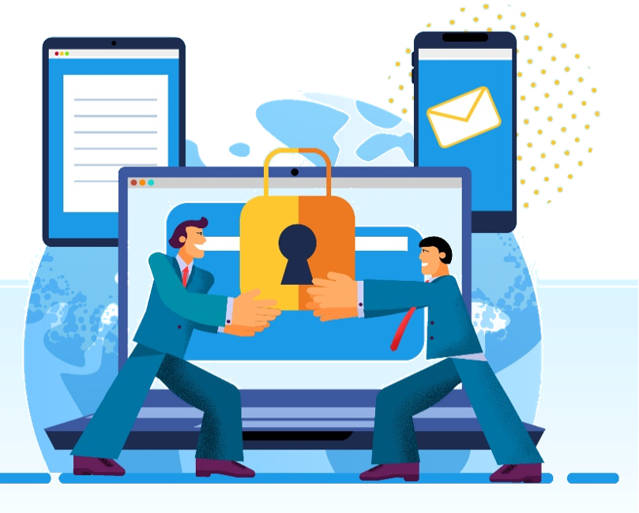

La ciberseguridad tiene su origen en la necesidad de proteger los sistemas informáticos y la información que manejan. Con la aparición de la informática y la conexión en red de los sistemas, surgió la necesidad de protegerlos ante posibles ataques y amenazas informáticas. A medida que la tecnología ha avanzado, los riesgos y las amenazas han aumentado, por lo que la ciberseguridad se ha convertido en una disciplina clave para proteger los sistemas y datos.
Es el área relacionada con la informática y la telemática que se enfoca en la protección de la
infraestructura computacional y todo lo que este vinculado y la información contenida en
una computadora a través de las redes de computadoras.
Las bases de la ciberseguridad se centran en la protección de los sistemas informáticos y la información que manejan. Entre las medidas de seguridad que se implementan se encuentran el cifrado de la información, la autenticación de usuarios y la detección de intrusos. Además, la ciberseguridad busca garantizar la privacidad y la confidencialidad de los usuarios.
La historia de la ciberseguridad se ha desarrollado en paralelo con la evolución de la tecnología informática. En sus inicios, la ciberseguridad se centraba en la protección de sistemas militares y gubernamentales, pero con el auge de internet, la ciberseguridad se ha extendido a empresas y usuarios individuales. A medida que los riesgos y amenazas han aumentado
El objetivo de la ciberseguridad es proteger los sistemas informáticos y la información que manejan, así como garantizar la privacidad y la confidencialidad de los usuarios. Para ello, se implementan medidas de seguridad como el cifrado de la información, la autenticación de usuarios y la detección de intrusos. Además, la ciberseguridad busca prevenir y mitigar los riesgos y las amenazas informáticas, así como asegurar la disponibilidad y la integridad de los sistemas y datos.
Las amenazas informáticas pueden ser internas o externas. Las amenazas internas son aquellas que provienen de personas que tienen acceso autorizado a los sistemas, como empleados o contratistas. Estas amenazas pueden ser accidentales o intencionales. Por otro lado, las amenazas externas provienen de personas ajenas a la organización y pueden ser de diversas formas, como ataques de hackers, malware, phishing, entre otros.
El ransomware es un tipo de malware que cifra los archivos de una víctima y exige un rescate para restaurar el acceso. Para prevenir el ransomware, se deben tomar medidas como mantener copias de seguridad actualizadas, utilizar software de seguridad confiable, tener cuidado al abrir archivos adjuntos y mantener el sistema actualizado.
El malware es software malicioso diseñado para dañar o comprometer sistemas y datos.
Un ataque de phishing es un intento de engañar a las personas para que revelen información confidencial, como contraseñas o datos financieros, haciéndose pasar por una entidad confiable a través de correos electrónicos, mensajes de texto o sitios web falsos.
Un ataque de fuerza bruta es un intento de descifrar una contraseña probando diferentes combinaciones hasta encontrar la correcta. Para prevenirlo, se deben utilizar contraseñas fuertes y complejas y establecer bloqueos o limitaciones de intentos de inicio de sesión.
El smishing es una forma de phishing que utiliza mensajes de texto o SMS para engañar a las personas. Para evitarlo debes tener precaución al abrir mensajes de texto desconocidos, no hacer clic en enlaces sospechosos y evitar proporcionar información personal a través de mensajes de texto no confiables.
La ingeniería social es una técnica utilizada por atacantes para manipular a las personas y obtener información confidencial. Para protegerte de la ingeniería social, debes ser cauteloso al compartir información personal o confidencial, verificar la autenticidad de las solicitudes y educarte sobre las tácticas comunes utilizadas por los estafadores.
Entre las medidas de seguridad que se implementan en la ciberseguridad se encuentran el cifrado de la información, la autenticación de usuarios, la detección de intrusos y el control de acceso. También se utilizan soluciones de software y hardware para proteger los sistemas, como firewalls, antivirus, sistemas de prevención de intrusiones, entre otros. Además, es importante contar con políticas y procedimientos de seguridad, y capacitar a los usuarios en buenas prácticas de seguridad.
para proteger tu información en redes sociales incluyen revisar y ajustar la configuración de privacidad, ser selectivo con las solicitudes de amistad o conexión, evitar publicar información confidencial, tener cuidado con los enlaces y archivos compartidos, y ser consciente de la información que se comparte en publicaciones públicas.
Puedes proteger tus datos personales en línea utilizando contraseñas seguras, evitando proporcionar información personal en sitios web no confiables, utilizando conexiones seguras (HTTPS), siendo selectivo con las aplicaciones y servicios que utilizas, y revisando y ajustando la configuración de privacidad en tus cuentas en línea.
Puedes proteger tu red Wi-Fi doméstica utilizando una contraseña segura, habilitando el cifrado WPA2 o WPA3, desactivando la difusión del nombre de la red (SSID), y manteniendo actualizados los firmware de los dispositivos de red.
Una VPN es una red privada virtual que crea una conexión segura y encriptada entre tu dispositivo y una red privada a través de Internet. Ayuda a proteger tus datos y privacidad en línea al enmascarar tu dirección IP y cifrar tu tráfico, lo que dificulta el rastreo y la interceptación de la información.
Puedes identificar sitios web falsos verificando la URL, buscando señales de seguridad como el icono de candado en la barra de direcciones, y evitando hacer clic en enlaces sospechosos. Para protegerte es importante mantener el software del navegador y los complementos actualizados, utilizar extensiones de seguridad y tener cuidado al proporcionar información personal en línea.
La importancia de la ciberseguridad radica en la protección de los sistemas informáticos y la información que manejan, así como en la garantía de la privacidad y la confidencialidad de los usuarios. Los ataques informáticos pueden tener graves consecuencias, como la pérdida de información valiosa, la interrupción de los servicios, el robo de identidad y la exposición a riesgos financieros. Por ello, es fundamental contar con medidas de seguridad efectivas y estar al tanto de las últimas amenazas y tendencias en ciberseguridad.
La seguridad de la IoT se refiere a las medidas implementadas para proteger los dispositivos conectados a Internet, como dispositivos domésticos inteligentes, vehículos conectados, dispositivos médicos, etc.
Los desafíos de la ciberseguridad son muchos y cambiantes. Los cibercriminales están constantemente buscando nuevas formas de atacar los sistemas y las medidas de seguridad deben evolucionar al mismo ritmo para estar preparados ante nuevas amenazas. Además, la falta de conciencia y formación en seguridad informática por parte de los usuarios sigue siendo un desafío importante en la lucha contra los ataques informáticos.
En el futuro, se espera que la ciberseguridad siga siendo un tema crítico y en constante evolución. Con la creciente conectividad y el uso de la tecnología en todos los aspectos de la vida, es fundamental contar con medidas de seguridad efectivas y avanzadas. Además, se espera que la inteligencia artificial y el aprendizaje automático jueguen un papel importante en la ciberseguridad, permitiendo una detección más rápida y eficiente de amenazas informáticas.
En conclusión, la ciberseguridad es un tema crítico en la actualidad debido al creciente uso de la tecnología y la interconexión de los sistemas informáticos. La protección de la información y la privacidad de los usuarios es fundamental para evitar graves consecuencias. Es importante contar con medidas de seguridad efectivas y avanzadas, así como con políticas y procedimientos de seguridad. Además, la conciencia y formación en seguridad informática por parte de los usuarios es esencial para prevenir ataques informáticos. La ciberseguridad seguirá siendo un tema crítico en el futuro, y se espera que evolucione para adaptarse a las nuevas amenazas y tendencias en tecnología.